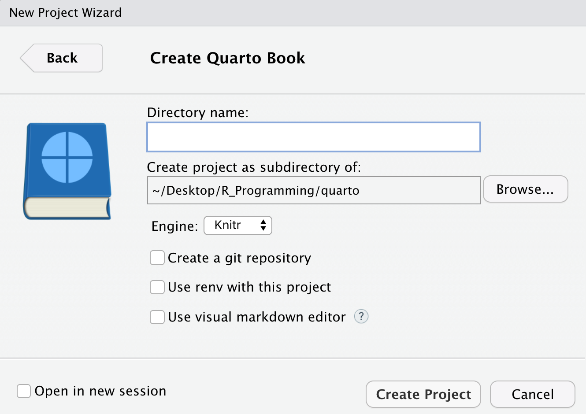

Intro to Quarto
Quarto เป็น scientific markdown publishing system สร้างโดยทีมงานที่สร้าง R Markdown มีจุดมุ่งหมายเป็น super-set หรือ next-generation ของ R Markdown โดย Quarto สามารถ
รองรับภาษา R, Python, Julia, Observable JS
รองรับ R Markdown (
.Rmd), Jupyter notebook (.ipynb), และ Quarto markdown (.qmd)สามารถ render output ได้หลายรูปแบบ เช่น HTML, PDF, MS Word, etc. หรือแม้แต่ใช้เขียน หนังสือ, website, blog
รองรับสำหรับ scientific markdown สำหรับเอกสารทางวิชาการได้ดี ไม่ว่าจะเป็น equations, citation, crossrefs, callouts, หรือ layout ต่างๆ
Quarto to PDF in Thai
เอกสาร Quarto ที่มีภาษาไทย สามารถ render เป็น HTML, MS Word ได้ทันที แต่สำหรับ PDF จะต้องมีการ setup เพิ่มเติม ซึ่งจะอธิบายวิธีการในบทความนี้
โดยสรุป: หลักการคือ แทรก LaTeX preamble ที่มีการตั้งค่าภาษาไทย เข้าไป ก่อนที่ LaTeX จะ compile เป็น PDF นั่นเอง
(สำหรับ PDF engine ทาง Quarto ใช้เป็น XeLaTeX เป็น default ซึ่งรองรับภาษาไทยได้อยู่แล้่ว)
Example
ในตัวอย่างนี้จะสอนการสร้าง Quarto Book ที่มีภาษาไทย โดย render เป็น PDF
ผมได้สร้าง repository ตัวอย่างไว้ที่นี่:
ซึ่งเป็นรูปแบบ Quarto Book โดยสามารถดูผลลัพท์ที่ render แล้วได้จาก:
Tutorial
Step 1: Create Quarto Book
สร้าง Quarto book Project หรือถ้าใช้ RStudio สามารถสร้างโดย
New Project->Quarto Book

Step 2: Get Thai LaTeX Preamble Setting
สร้าง LaTeX preamble ที่มีการตั้งค่าภาษาไทย ไว้ใน project โดยใช้คำสั่ง
thaipdf::use_thai_preamble()จะสร้างไฟล์ thai-preamble.tex ที่ตั้งค่า font เป็น “TH Sarabun New” มาให้ (สามารถเปลี่ยนเป็น font อื่นได้ที่ thai_font argument)
Step 3: Include Thai Preamble
จากนั้น ในไฟล์ที่มีตั้งค่าสำหรับ Quarto (_quarto.yml หรือ _metadata.yml) ให้ใส่ thai-preamble.tex ไปที่ include-in-header ของ pdf แบบนี้
format:
pdf:
include-in-header: "thai-preamble.tex"(สามารถเก็บ intermediate LaTeX ไว้เพื่อ debug ได้ด้วย keep-tex: true)
จากนั้นสามารถใช้ภาษาไทยและ render เป็น PDF ได้เลย
quarto renderจากตัวอย่างจะได้ผลลัพท์ PDF เป็น PDF Book in Thai
จบแล้วครับ เย่! 🎉